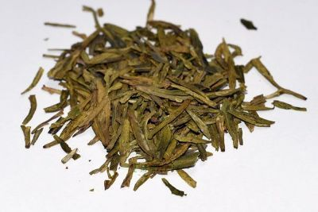

狗不理包子以其味道鲜美而誉满全国，名扬中外。狗不理包子倍受欢迎，关键在于用料精细，制作讲究。在用料上，狗不理包子的肉馅别具特色，选用七成瘦三成肥的新鲜猪肉，上等酱油找口，放上香油、味精、葱姜末等佐料，边加水边搅拌，打成肉丁水馅。包子皮使用半发酵“一拱肥”富强面。做工上，狗不理包子从揉面、揪剂、擀皮、装馅、掐包、上屉、上大灶，都有明确的规格标准，掐出来的包子褶花匀称，每个包子的褶不少于十五六个。刚出屉的包子，看上去如薄雾之中的含苞秋菊，爽眼舒心，咬一口，油水汪汪，香而不腻。狗不理包子铺原名“德聚号”，据今已有百余年的历史。店主叫高贵友，其乳名叫“狗不理”，人们久而久之喊顺了嘴，把他所经营的包子称作“狗不理包子”，而原店铺字号却渐渐被人们淡忘了。据说，袁世凯当直隶总督时，曾把狗不理包子作为贡品进京献给慈禧太后，慈禧很爱吃。从此，狗不理包子名声大振，许多地方开设分号。如今，狗不理包子已走向世界，进入许多国家市场，倍受宾客欢迎。
桂发祥麻花的创始人是范贵才、范贵林兄弟，他们曾在天津大沽南路的十八街各开了“桂发祥”和“桂发成”麻花店，因店铺座落于十八街，人们又习惯称其为十八街麻花。十八街麻花是经过反复探索进行创新，在白条和麻条中间夹一条含有桂花、闵姜、桃仁、瓜条等多种小料的酥馅，使炸出的麻花酥软香甜与众不同，创造出的什锦夹馅大麻花。其特点是香、酥、脆、甜，在干燥通风处放置数月不走味，不绵软、不变质。来天津旅游的国内外宾客，临走时都要带上几盒麻花，送亲朋好友。
崩豆张是天津最有名的一家专门制作和销售各种豆类干货小吃食品的私营企业。公司由总店和一个分店、一个加工厂共三部分组成有职工六十余人，总店设在南市食品街。崩豆张传统产品始源于嘉庆年间，有二百四十多年历史。1993年被国家内贸部命名为“中华老字号”。1990年曾作为第十一界北京亚运会指定产品，并获得各种殊容。“崩豆张”是天津最有名的一家专门制作和销售各种豆类干货小吃食品的私营企业 崩豆张。公司由总店和一个分店、一个加工厂共三部分组成有职工六十余人。总店设在南市食品街，在古文化街设分店、王顶堤设加工厂。生产糊皮正香崩豆、去皮夹心崩豆、桂花酥崩豆、豌豆黄、三豆凉糕、冰糖奶油豆、冰糖怪味豆、儿童珍珠豆、去皮麻辣豆等。分高、中、低三个档次，共16大类76个品种。产品畅销天津、北京、武汉、南京、贵阳、杭州、合肥、大连等地，1990年作为天津市的名、特、优、新 产品，指定在亚运会期间进京展销。
正宗的贴饽饽熬小鱼不是分开做，而叫“一锅熟”，就是贴饽饽和熬小鱼同时在一锅里做熟上桌其味道与山珍海味媲美。制做贴饽饽熬小鱼，鱼要选择个头小的，最好是活的白鳞小鲫鱼，肉嫩刺软棒子面是当年的新鲜粮食。农家用的大锅烧热后，锅底熬鱼，锅帮四周转着贴满饽饽。柴禾不能烧得太猛太久，要注意掌握火候，温火把作料靠净。到时一揭锅盖，香味四溢。饽饽出锅，黄灿灿的结着一层焦嘎，咬一口，又脆又香，再就着熬小鱼，连鱼刺都不用吐出。那味道，那鲜劲，吃起来保准没个够
( 天津) 最能代表天津地方特色的大众化风味小吃就是贴饽饽熬小鱼，以玉米粉热水和面，用手拍成长圆形厚饼，贴在灶火锅的周围烤制而成。熬小鱼选用小鲫鱼去掉内脏，沾上面粉或鸡蛋清，放进油勺内炸至金黄色后放至锅内，撒上葱、姜、蒜、大料、倒入料酒、醋、酱油、糖、盐、面酱、味精和适量水调汤汁，微火至鱼松软，淋上麻油取出。将热气腾腾的贴饽饽熬小鱼一起食用，鲜香无比，味道极佳。

是天津的一道家常菜，以摊好的煎饼为主料，煎饼的主要原料是绿豆、小米、虾皮、香料和水。首先，这摊煎饼就得有一定的功夫，要想吃口好，必须摊得薄，没两下子的话，这煎饼不是生就是焦，不是太软就是太硬。煎饼摊好后，切成柳叶条形状，放在卤锅（一直不断火）内稍加搅拌，连卤盛碗，再加上腐乳汁、芝麻酱、香菜、辣子等佐料，成品既脆又酥，味道鲜美。

黄花山核桃 天津市蓟县孙各庄满族自治乡、下营镇2个乡镇现辖行政区域 天津市蓟县人民政府《关于划定蓟县“黄花山核桃”地理标志产品产地范围的函》，蓟政函〔2012〕88号 天津蓟州绿色食品有限公司企业标准：Q/12JX4395-2012《黄花山核桃生产技术规范》一、品种 辽核1号、辽核4号、中林1号及当地传统品种优系。 二、立地条件 产地范围内海拔200米以下、相对高度50至100米，土壤类型为石灰岩类淋溶褐土，土壤pH值6.2至8.0，土层厚度1米以上，有机质含量≥1.4%。
崔庄是滨海新区太平镇的一个村。该村盛产冬枣。崔庄冬枣久负盛名本是枣中极品。崔庄冬枣皮薄核小肉厚，肉质酥脆甘甜，成为皇上贡品，因此也称贡枣。 说起崔庄冬枣还有一段神话故事传说，更增添了崔庄冬枣浪漫和神奇。相传，这段神话故事和齐天大圣孙悟空大闹天宫有关。那次王母娘娘在天宫举行蟠桃会，各路神仙都到王母娘娘那里喝御酒来了，1为齐天大圣的孙悟空未在邀请名单之列，非常生气，便使性撒泼。孙大圣一个跟头十万八千里，穿过云层来到天宫将蟠桃盛宴搅了个人仰马翻。王母娘娘的御酒撒了一地，仙果被弄得七零八落。仙果滚下仙桌，穿过云层掉到人间，落在了崔庄田园内。仙果在崔庄地上生根发芽长成了苍翠的冬枣树。
据有关资料，崔庄冬枣颇有悠久历史，早在1560年该村刘氏家族就开始种植。后来不断研究，经多次嫁接，终获成功，成为精品。据本草纲目记载，冬枣具有“味甘无毒、主心邪气、安中健脾、平胃通窍、滋补养颜、久服轻身延年益寿”之功效。相传，崔庄冬枣曾是清代皇上的贡品，名燥一时。后来，由于战乱和灾荒，崔庄冬枣林遭到破坏，残留无几。直到二十世纪六十年代，又开始出现了生机。0时，崔庄冬枣再次遭到破坏，目无王法的造反派“宁要社会主义的草，不要资本主义的枣”，将冬枣树连根刨起。幸亏老刘家留下了一点。而今人逢盛世，冬枣树逢春，崔庄冬枣成了农民致富的金蛋蛋儿。枣树蓬勃生机，创下了株产百斤新纪录。
红花峪桑葚是天津市蓟县别山镇的特产。红花峪桑葚果实饱满、颗粒大而紧，颜色油亮，口感甜软清香，多汁，入口易化的特点，并且已有500多年的栽植历史。红花峪桑葚获地理标志保护产品。桑葚为桑科落叶乔木桑树的成熟果实。又名桑果、桑葚子。人们喜食成熟的鲜果，亦可加工制做成桑葚酒、桑葚饮料、桑葚罐头。红花峪桑葚因生长在天津市蓟县别山镇的红花峪而得名。红花峪桑葚生产在蓟县城区东南10公里、于桥水库南岸山前的红花峪山坳内，地形环境相对封闭，四周分布着九座海拔80-150米的低山，当地人又称为九岭红花峪。山上保存着较完整的原始次生林，山顶苍松翠柏，山腰乔灌繁密，山脚花果飘香。红花峪桑葚产区四季分明，年平均气温、积温均高于蓟县的北部山区和南部洼区，冬暖夏凉。由于与于桥水库一山之隔，水源充足。地势坡度较小，呈梯田式分布，土壤系砂页岩、石灰岩风化而成的中壤土，适耕性长，耕性好，通透性和保水保肥能力强，养份含量高。